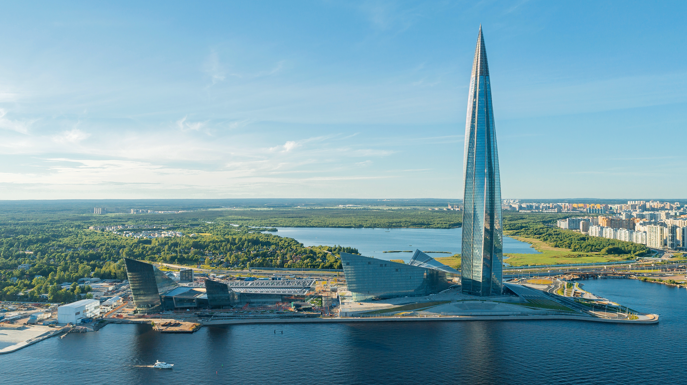
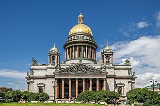
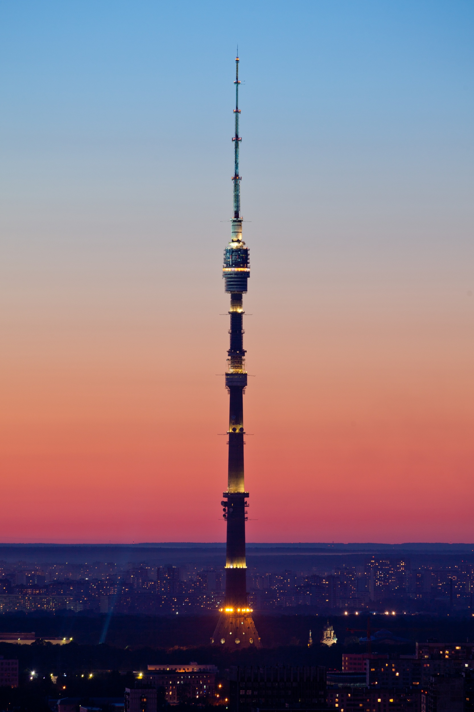
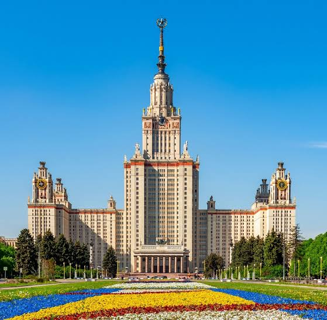

Галерея









Русская архитектура — это тысячелетняя история: от белокаменных храмов Владимиро-Суздальской Руси и деревянного зодчества Севера до московского барокко, петербургского классицизма, «сталинских высоток» и современных небоскрёбов.
На сайте собраны сведения о знаменитых сооружениях страны. Разделы:
Самое высокое здание России и Европы: высота небоскрёба составляет 462 метра. Комплекс построен в 2019 году на берегу Финского залива.
Форма башни — скрученный в плане витой «язык пламени», что снижает нагрузку от ветра и делает силуэт узнаваемым. Фасад образован двойным остеклением.
Телебашня высотой 540 метров открыта в 1967 году. Её главный конструктор — Николай Никитин. Долгое время она была самым высоким сооружением мира.
Башня имеет предварительно напряжённый железобетонный ствол, опирающийся на фундамент глубиной всего около 4,6 метра.
Одна из семи «сталинских высоток» Москвы, завершённая в 1953 году по проекту Льва Руднева. Высота здания со шпилем — 240 метров.
До 1990 года это было самое высокое здание Европы.